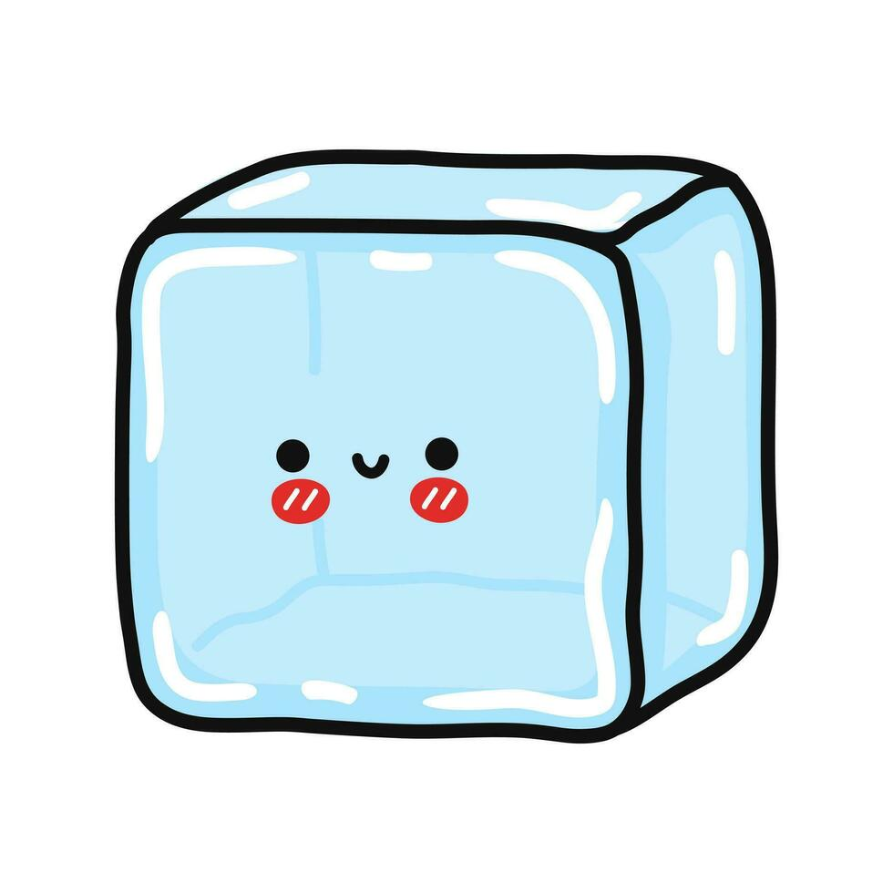

Ice Cubes:

description:
IceCubes are frozen water squares that chill and refresh any drink. Perfect for cocktails, sodas, or water, they keep beverages icy cold and are a must-have for any kitchen.
Ingredients:
-
2 cups water (approximately)
-
2 tablespoons water (additional if needed)
-
4 cucumbers(have to be tiny)
Steps:
-
Empty the ice cubes that are left in the trays (if there are any left) into the bin.
-
Take the trays over to the sink and fill them with cold water. (Hot water will freeze faster and more clear).
-
Place the water filled ice trays back in the freezer.
-
Replace the ice bin if you had to remove it.
-
Shut the door to the freezer.
-
Be sure to leave for around 4-6 hours at least to make sure it is frozen.
-
If you want to experiment, you can freeze things like fruit infused waters or juices.
-
Takeoff